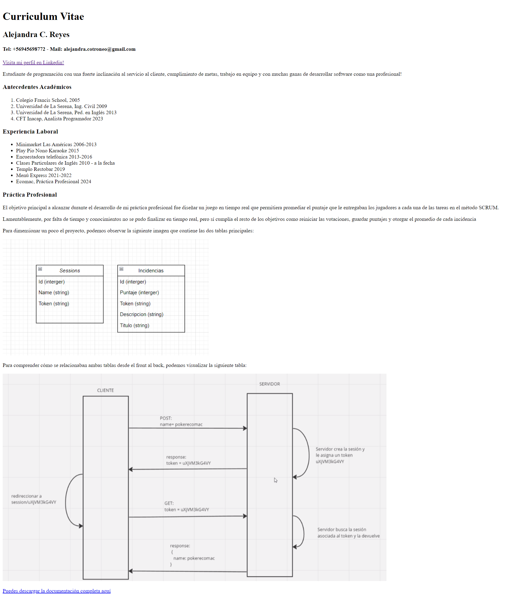
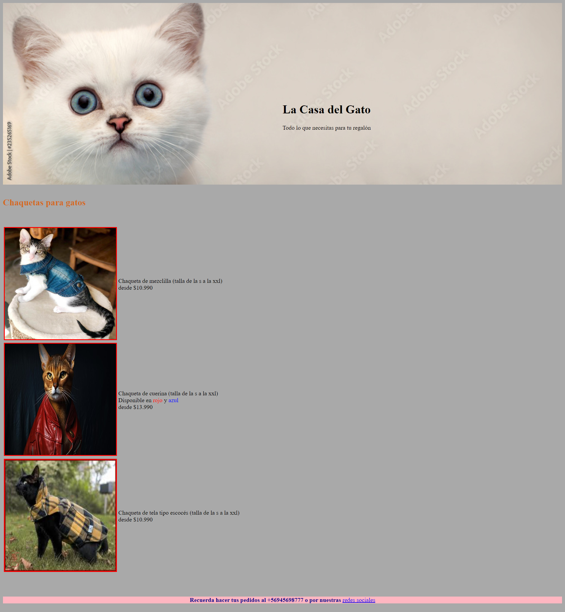
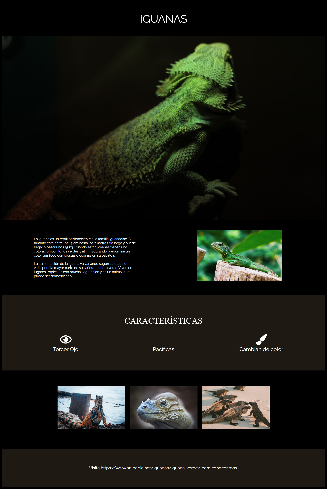
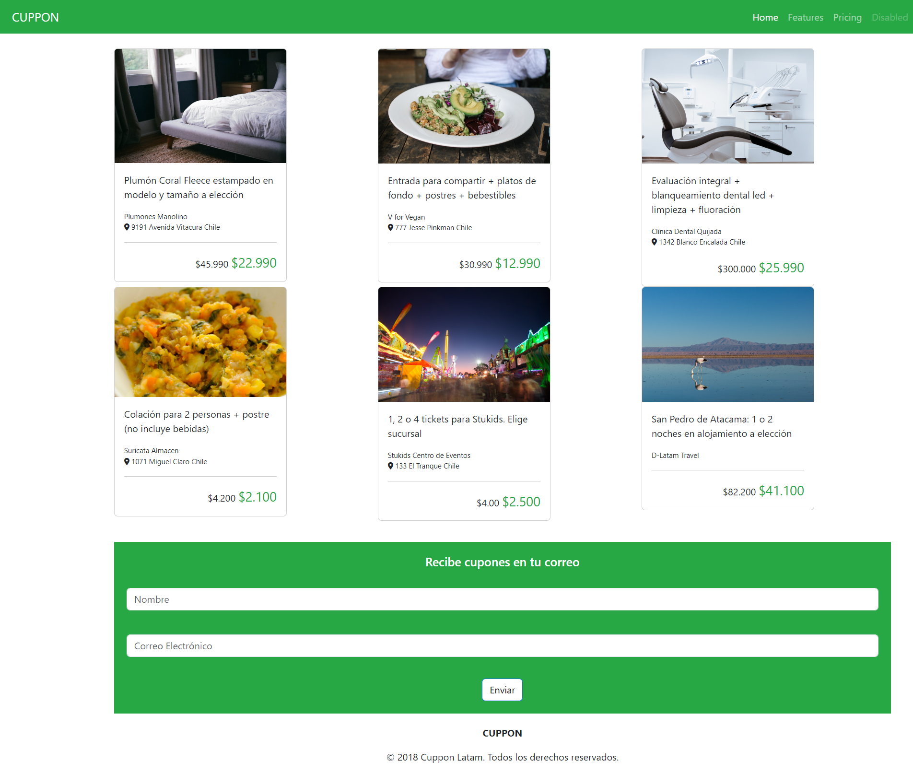

Hola! Bienvenido a mi currículum!
Disclarimer: Es importante destacar que le he puesto mi sello distintivo a todos mis trabajos, pero somos humanos y en estos momentos estoy en duelo por lo tanto no puedo dar al 100% como me gustaría hacerlo. Agradezco la comprensión en este momento tan sensible.

Educación
- Pedagogía en Inglés - Universidad de La Serena 2014
- Analista Programador - Inacap 2024
- Desarrollador Fullstack - Desafío Latam 2024
Experiencia
- Clases particulares de inglés 2012 a la fecha
- Cocinera Coquimbo, 2016-2017
- Garzona Maipú, 2018-2019
- Práctica Profesional - Ecomac 2024
Portafolio
Desafio 1

El objetivo de este desafío era comenzar a familiarizarse con HTML, como se puede apreciar en su estilo blanco y negro, era bastante simple
Desafio 2

El objetivo aquí fue diseñar una tienda con fotos de lo que quisiéramos para poder familiarizarnos con CSS.
Desafio 3

El fin de este desafío era replicar una página a través de una maqueta. 10/10 el mejor desafío
Desafio 4

Aquí debíamos replicar nuevamente una página según una maqueta y poder utilizar fuentes e íconos externas